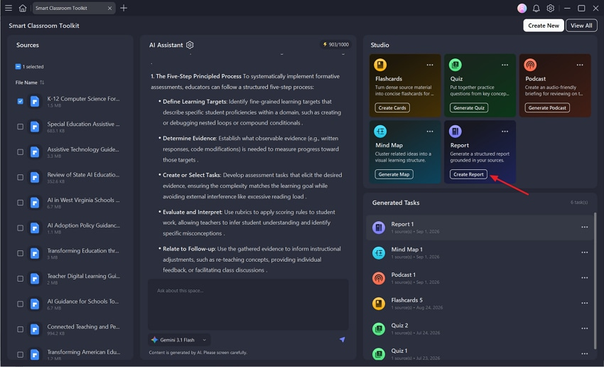

每周三份行业简报，我用 PDFelement 把四步压缩成一条链
以前整理一份行业简报要来回切三四个工具、手动复制粘贴七八次，现在一条流程链搞定：PDFelement 的 AI 工作区帮我把十几份 PDF 资料综合成结构化报告，导出直接发飞书。
旧流程：一份简报半天没了
我每周固定要出三份行业简报——新能源、AI 应用、跨境电商，各一份。每份简报的素材来源都是行业研报、政策文件、竞品公开资料，通常是 5 到 12 份 PDF。
以前的流程是这样的：
- 把一堆 PDF 拖进浏览器或阅读器，一份份翻，看到有用的段落就高亮或截图
- 切到 Word，手动把截图和高亮的文字粘进去，自己拼凑结构
- 拼完结构后，还要挨个回去翻原文核对数据和出处，前后跳转七八次
- 最后导出成 PDF，上传到飞书云文档，在群里发个通知
一份简报走完要三四个小时，三份凑一起就是大半天。最烦的不是写，是跳转和核对——我记不清哪张截图来自哪份文件、那个数字在原文第几页，写着写着就停下来翻回去找。
新流程：把 PDFelement 插进链条的中间
现在这条流程被我砍成了五步，而且其中三步是 PDFelement 自动完成的——这个主打 PDF 全流程处理的工具在PDFelement官网上有完整的功能列表：
第一步：素材收集——和以前一样，把行业研报、白皮书、政策 PDF 全部扔到一个文件夹里，这步没变。
第二步：丢进 PDFelement 的 AI Space——打开软件，进 AI 标签页，选 Studio，然后点 Reports。这个功能是它的 AI 智能工作区里最重的产物，输入多份资料，AI 直接吐一份结构化的研究报告。
第三步：让 AI 综合分析——选报告类型的时候我一般用 Standard 或 In-depth。Standard 模式会给我问题、答案、核心概念三块；如果那份简报要挖得深一点，就切 In-depth，它会额外给出证据支撑和常见误解。Custom 模式我很少用，但如果那份简报有明确的读者（比如给老板看的），我会在 Custom 里把目标读者设成「管理层决策者」，报告语言选中文，让 AI 自动调重心。
第四步：导出+二次加工——AI 生成的报告在 PDFelement 内置阅读器里打开，结构已经很完整了：标题摘要、核心概念、问题与答案、分析论据、常见误解、结论。我通读一遍，把它没挖到的点补上（AI 偶尔会漏一些边角料的视角），然后右键直接导出 PDF，或者选中段落复制到飞书文档里再润色一下。
第五步：分发——导出的 PDF 直接扔飞书群，或者云文档里贴链接。
整条链里，我手动做的事只在第一步和第四步。中间的分析、综合、结构化，全是 AI 一口气跑完的。
链条里两个最容易断的环节
这条流程跑了两个月，最容易出问题的地方有两个——我也找到了对应的处理方式。
环节一：AI 报告质量不稳定
AI 生成的报告好不好，直接取决于你喂进去的资料。我试过把新能源研报和跨境电商白皮书一起丢进去，结果 AI 报告里把光伏政策和外贸流程混在一起，完全没法用。
解决办法很简单：一次只喂一个主题的资料。每周三份简报，就分三次跑——新能源一份、AI 一份、跨境一份。每份最多 8 到 10 个 PDF，主题越集中，AI 报告越扎实。
另外一个小技巧：AI 报告里的每一个观点都可以点击，跳回原始资料里对应的位置。这个功能是查错神器——AI 偶尔会冒出一些看似合理但资料里没明确说过的话（就是幻觉），报告里看到可疑的结论，点一下就能跳回原文核对。我现在形成了习惯，每篇 AI 报告的关键数据点都跳回去看一眼，省了后面返工。想自己试试这个功能的话，从PDFelement下载装一份 Pro 版就行。

环节二：简报里要涂黑敏感信息
有时候客户的公开资料里会露出一些不该外流的东西——比如某个合同里的联系人电话、竞品文件里的供应商名称。以前我是用黑色矩形在 PDF 上盖一层，后来才知道这等于没盖：对方把矩形一删，下面的字完完整整露出来。
现在用 PDFelement 里 Protect 标签页的 Redact 功能，这个功能的完整操作步骤我是从PDFelement文档里学的。它不是盖黑块，是直接把选中的文字从 PDF 内容层物理删除，在那个位置放一个黑色矩形占位。删除之后还自动清理 PDF 里的元数据、隐藏文字层、嵌入的注释——这些都是常见的信息泄漏点。
操作上我用 Search & Redact 批量搜手机号（正则 [0-9]{11}）、邮箱、敏感公司名，一键全涂黑。每次处理前先 Save As 存一份备份，在副本上做涂黑，涂错了回原版重来。涂完翻一遍确认没有遗漏，再发出去。
效果与边界
现在一份简报从三四个小时降到了 30 分钟左右，其中 AI 生成报告要 1 到 3 分钟（取决于资料数量），我通读+补洞大概 15 分钟，导出+分发 5 分钟。以前一周出三份简报要一个下午，现在一个上午搞定，剩下的时间可以用来处理更有意思的事。
但这套流程也有边界：
- 资料太少不行：只喂两三份 PDF 进去，AI 报告要么空泛要么太单薄，至少要 5 份以上主题集中的资料才好用。
- 纯数据型简报不行：如果简报全是图表和数字（比如财报分析），AI 报告里对数据的解读会偏浅，还是得自己上。
- 不能完全依赖 AI 结论：AI 报告是草稿，不是终稿。它的结构和核心概念抓得很准，但细节和观点还是得自己核对一下——尤其是要对外发的简报。
说白了，PDFelement 在这条链里干的就是「帮你把一堆散乱的资料先组织成骨架」，你再往里填肉、查错、调重心。它不替你做研究决策，但能省掉你把散乱的骨架一根根拼起来的体力活。
最后说个小事
如果你也想把它嵌进自己的工作流，试用期内保存的 PDF 会带水印，所以正式文档还是等激活 Pro 版之后再处理比较稳妥。总之，把工具插对位置，比换工具本身重要得多。这套 PDFelement 的使用资料我也在社区里做了同步维护，GitHub 是主仓库，Gitee 和 GitCode 作为国内的镜像节点，方便不同网络环境的朋友获取。